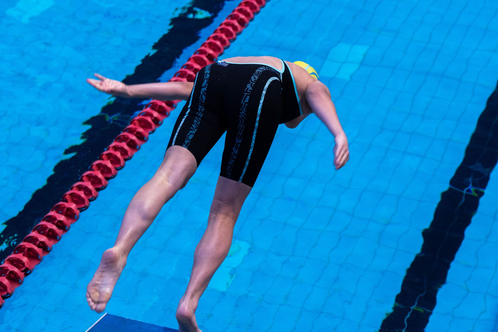

Getting Recruited: What Every Young Swimmer and Water Polo Player Needs to Know
For many young athletes, the dream does not stop at the high school pool or the water polo cage — it extends all the way to a college roster. The college recruiting process is one of the most exciting and, at times, most confusing experiences a student-athlete and their family will navigate together. Whether your swimmer is just entering high school or your water polo player is already a junior logging serious pool hours, understanding how recruitment works can give your family a meaningful head start.
Why Starting Early Matters
College coaches at competitive programs begin identifying prospective athletes earlier than most families expect. Many swimmers and water polo players who earn Division I or Division II scholarships began building their recruiting profiles as freshmen or even in their middle school years. This does not mean that late bloomers have no path forward — they absolutely do — but it does mean that the earlier a young athlete understands the process, the more options they are likely to have.
In the Tampa Bay area, young athletes in communities like Wesley Chapel and Land O' Lakes are increasingly competing at regional and national levels. That visibility matters enormously when college coaches are scanning meet results and tournament rosters looking for talent.
Building a Strong Athletic Profile
Before a college coach can recruit a young athlete, they need to know that athlete exists. Building a strong profile involves several important steps that go well beyond simply swimming fast or scoring goals.
- Maintain competitive times or stats: For swimmers, this means consistently registering for sanctioned USA Swimming or high school meets. For water polo players, participating in club competitions and showcase tournaments puts your name in front of college staff.
- Create a highlight or performance video: A concise, well-edited video of race footage or game film is one of the most powerful tools a young athlete can send to a college program. Keep it under five minutes and lead with your strongest moments.
- Develop your academic record: College coaches recruit the whole student. Strong grades and standardized test scores open doors at more institutions and make a young athlete a far more attractive prospect from an admissions standpoint.
- Reach out proactively: Coaches appreciate when athletes take initiative. A short, professional email introducing yourself, sharing your athletic highlights, and expressing genuine interest in a program goes a long way.
The Role of Your Club Program
Club coaches are often the most valuable resource a young athlete has in the recruiting process. They have relationships with college coaches, they understand what level of program fits each swimmer or player, and they can help craft a realistic and ambitious list of schools to pursue. At Nexar Aquatic Academy, coaches work closely with athletes and their families to help them understand their options, sharpen their skills, and present themselves confidently to college programs across the country.
What College Coaches Are Really Looking For
Beyond split times and goals scored, college coaches are evaluating character, coachability, and team fit. Young athletes who demonstrate a strong work ethic, communicate respectfully, and show up consistently — in practice and in competition — tend to stand out even in a crowded recruiting pool.
Attend Camps and ID Clinics
Many college programs host identification camps or participate in recruiting showcases. Attending these events gives young athletes direct exposure to coaching staffs in an environment designed for evaluation. Several of these opportunities are accessible within driving distance for families throughout the Wesley Chapel and Land O' Lakes area.
Take the Next Step
The recruiting journey is a marathon, not a sprint. Young athletes who approach it with intention, patience, and consistent effort are the ones who find the right fit — academically and athletically. Nexar Aquatic Academy is committed to developing not just skilled swimmers and water polo players, but confident, well-rounded student-athletes ready for the next level. If your family has questions about the recruiting process or how to position your athlete for college success, reach out to our coaching staff today.
Ready to get in the water?
First practice is completely FREE — no commitment needed.